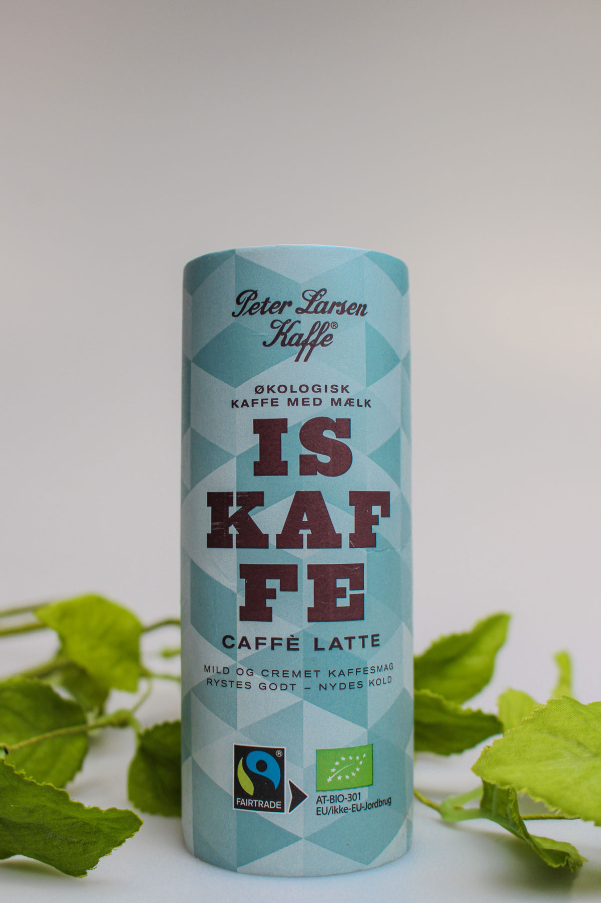
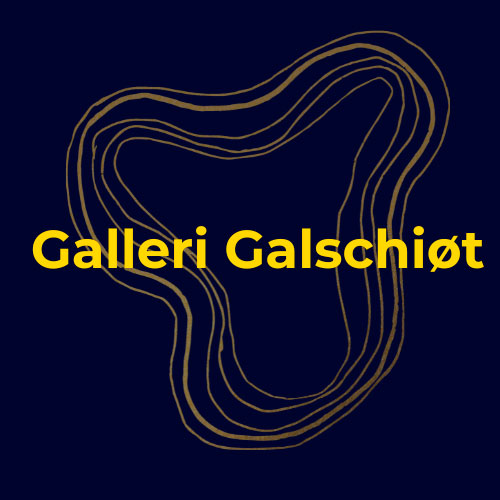
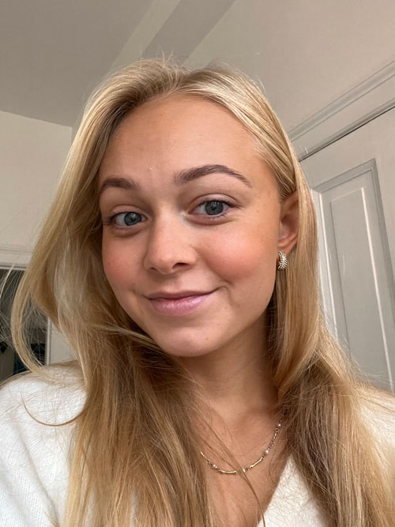
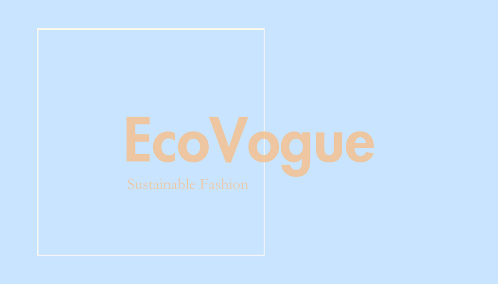
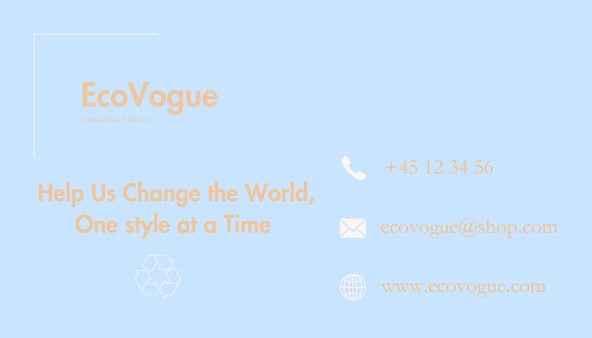

PORTFOLIO

Produktbilleder
Produktbilleder fotograferet i MedieLab på UCL og efterfølgende nøje redigeret i Adobe Lightroom.

Design
Re-design af logo til Galleri er designet i Canva samt et nyt personligt logo til hjemmeside og brand er designet i Adobe InDesign.

Portræt
Portræt tegnet i Adobe Illustrator udelukkende ved brug af pen-tool funktionen. Inspiration fra personligt billede.


Branding
Design af visitkort og logo til et (fiktivt) bæredygtigt mode brand. Produceret i Adobe Illustrator og Adobe InDesign.
Video
Videoen er redigeret i Adobe Premiere Pro og videomaterialet er optaget på UCL. Videoen er stil med en TikTok.
Animation
Animationen er først tegnet i Adobe Illustrator og derefter kodet i HTML og CSS for at kunne bevæge sig.